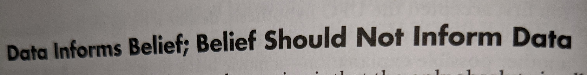

COVID-19 - Information Resources during ‘Dark Winter’
In this article, I list out my resources for reliable COVID-19 updates & research. Moreover, I discuss what holds for Americans after COVID-19.
Side note: Also, this is a follow up to my March 2020 article “Joining #Masks4All against Coronavirus”
Resources
General
-
Anthony Stephen Fauci “is an American physician and immunologist who has served as the director of the National Institute of Allergy and Infectious Diseases since 1989”
/cdn.vox-cdn.com/uploads/chorus_asset/file/19867593/acastro_200402_3959_drFauci_0001.jpg)
- NPR’s UpFirst Podcast
- The Daily from New York Times
Twitter has been always great with not only random spew of memes, jokes, and real time conversations, but also following noteable people. Here are some noteable people that I rely on for COVID-19 Opinions & Research Updates:
- Epidemiology Asst. prof @EpiEllie
- Ex-Obama health care head. @ASlavitt
- Assistant Professor of Biostatistics @nataliexdean
- infectious disease epidemiology @emma__glennon
- Biostatistician @LucyStats
- Biology Professor @UW @CT_Bergstrom
- Associate Professor in the Center for Policy and Research in Emergency Medicine, Oregon @choo_ek
- Epidemiologist & Health Economist. DrEricDing
- Note: Some of his more recent tweets have become a mix bag of items, than sole-COVID19 topics
SMALL GATHERINGS—I’m most worried about private small gatherings now. They are not publicly visible & difficult to monitor gathering sizes & masks. And people often let their guards down w/ friends/guests in own home. It’s a serious blindspot. #COVID19 pic.twitter.com/tu2eIN0sfG
— Eric Feigl-Ding (@DrEricDing) December 5, 2020
Looking into the future
Liability, and Insurance Eligibility for COVID-19
“Lawmakers pressure leaders to reach COVID-19 relief deal”
Currently, American GOP (Republicans) have been pressuring to “push for coronavirus-related liability protections for businesses, schools, nonprofit groups and religious organizations.”
How does this impact you?
“Coronavirus FAQ: Could COVID-19 Ever Be Considered A Preexisting Condition?”
“Health insurers used to be able to deny coverage – or charge more – for an applicant who had a preexisting medical condition. The Affordable Care Act changed all that as of 2014, guaranteeing coverage for those with preexisting conditions.”
- But thanks to the current administration, does such coverage still hold for people?… “If preexisting conditions were again to become a cause to deny coverage, would a COVID-19 survivor be in jeopardy?”
Information Mitigation
How can we ensure to mitigate dis/mis-information within different communities, even to those who are ‘educated’?
I leave this as an open question, as Americans, and the world, have a lot to think and act on this effort…

Stay safe, and hope you and your family and friends are well <3.